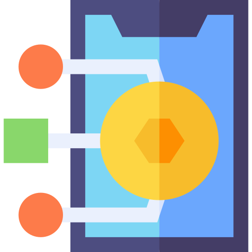
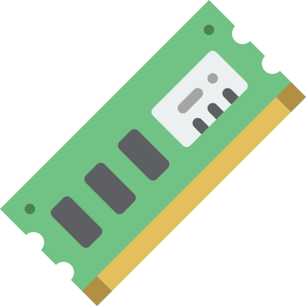
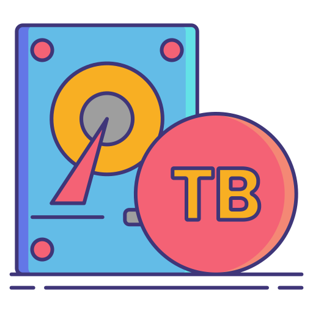
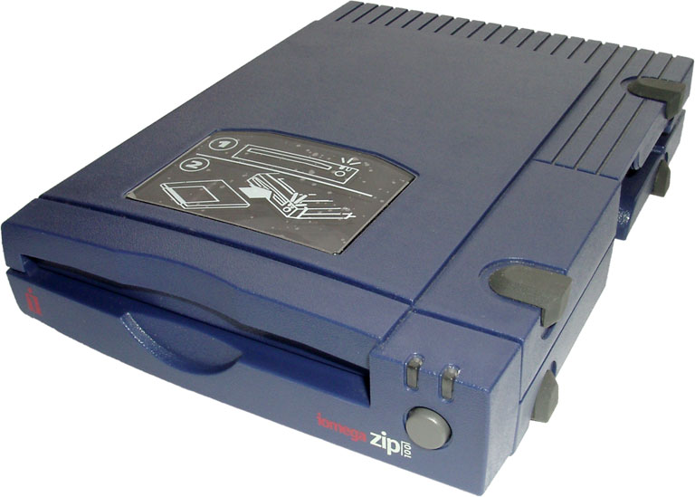
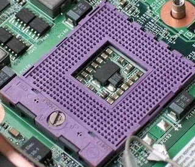

Glosario de terminos
N
- Navegador (n. masc.)
- Programa utilizado para acceder a los documentos almacenados en Internet.
- NFR (n. fem.)
- Versiones para su no-venta.

O
- On-line (n. masc.)
-
Conexiones a la red donde las respuestas del sistema se generan de forma casi inmediata.
- OpenGL (n. fem.)
- Librería de funciones gráficas avanzadas desarrollada por Silicon Graphics.

P
- Página Web (n. fem.)
-
Documento realizado en HTML y que es parte de un sitio Web.

- Plug-ins (n. masc.)
-
Aplicaciones que permiten interpretar y visualizar distintos tipos de ficheros que contienen elementos multimedia
y que
funcionan sincronizadamente con el navegador.
Q
- QuickTime (n. fem.)
-
Tecnología de reproducción de ficheros de vídeo desarrollada por Apple.
- Quote (n. masc.)
-
Término que designa a los fragmentos de texto o anotaciones del correo electrónico que sirven de recordatorio al
destinatario cuando se le responde un mensaje.

R
- RAM (Random Access Memory) (n. fem.)
-
Memoria de Acceso Aleatorio que mantiene vivos los datos hasta que se desconecta el ordenador.

- Red (n. fem.)
-
Dos o más equipos conectados entre sí.

S
- Scripts (n. masc.)
-
Conjunto de instrucciones que se ejecutan como una macro.
- Servidor (n. masc.)
-
Equipo que controla el acceso de los usuarios a una red y les da servicio e información.

T
- TCP/IP (n. masc.)
-
Protocolo de Internet (Protocolo de Control de Transmisión/Protocolo Internet) que especifica cómo se transmiten
los
datos en Internet para que todos los sistemas hablen el mismo idioma en Internet.
- Terabyte (n. masc.)
-
Unidad de almacenamiento futura, equivalente a más de un trillón de bytes.

U
- URL(n. masc.)
-
Localizador Uniforme de Recurso, dícese de la dirección de una página Web de Internet.

- USB (Universal Serial Bus) (n. masc.)
-
Conector de dispositivos externos que hace de vía de ampliación de los nuevos ordenadores.
V
- Ventana(n. fem.)
-
Forma rectangular que aparece en la pantalla y representa a una carpeta, una aplicación, un elemento.
- Vínculo (n. masc.)
-
Texto o imagen donde al hacer clic sobre ella nos lleva a una ubicación distinta dentro del documento o a una
página Web
en Internet.
W
- Web(n. fem.)
-
World Wide Web, Internet. Zona gráfica compuesta por millones de páginas Web y a la cual accedemos por medio de un
navegador.

- Webmaster (n. masc.)
-
Persona encargada de administrar una Web.

X
- Xenix(n. masc.)
-
Sistema operativo desarrollado por Microsoft de acuerdo a las especificaciones Unix.
- XSP (n. masc.)
-
eXtensible Server Pages. Este lenguaje es una de las tecnologías base de Cocoon, un sistema de publicación Web en
Java
basado en XML y uno de los siete componentes del proyecto Apache XML. El XSP se utiliza para construir contenidos
dinámicos en XML.
Y
- Yahoo!(n. masc.)
-
Portal más popular de Internet que permite la búsqueda de páginas Web por criterios o contenidos.

- Yottabyte (n. masc.)
-
Unidad de medida de capacidad de almacenamiento que equivale a 280 bytes, es decir 1024
(1.000.000.000.000.000.000.000.000) bytes. Un yottabyte es igual a 1024 zettabytes.
Z
- ZIP(n. masc.)
-
Dispositivo de almacenamiento magnético cuyos cartuchos pueden guardar hasta 250 Mb.

- Zócalo (n. masc.)
-
Hueco o lugar de la placa base donde se insertan en microprocesador, las memorias u otros chips.
